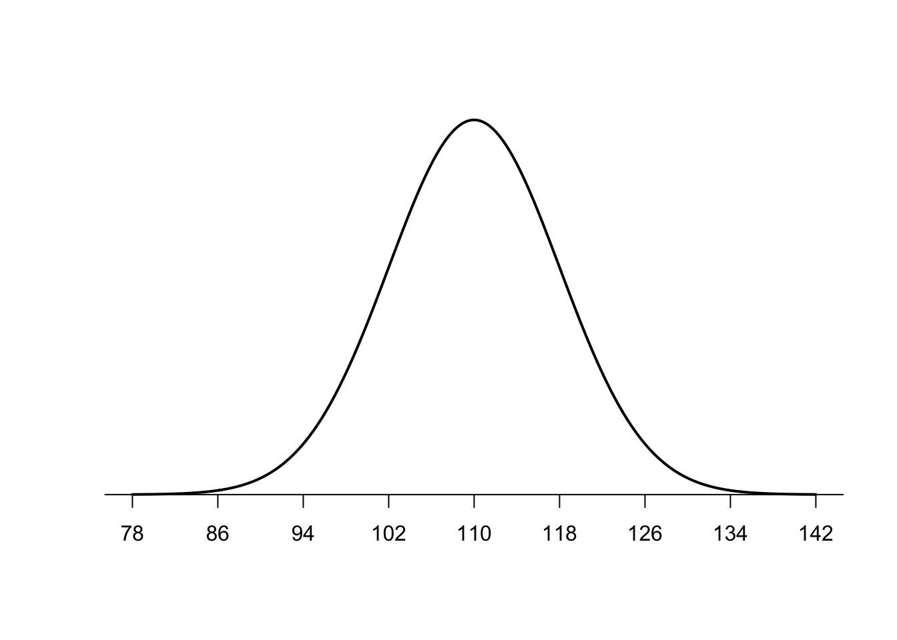
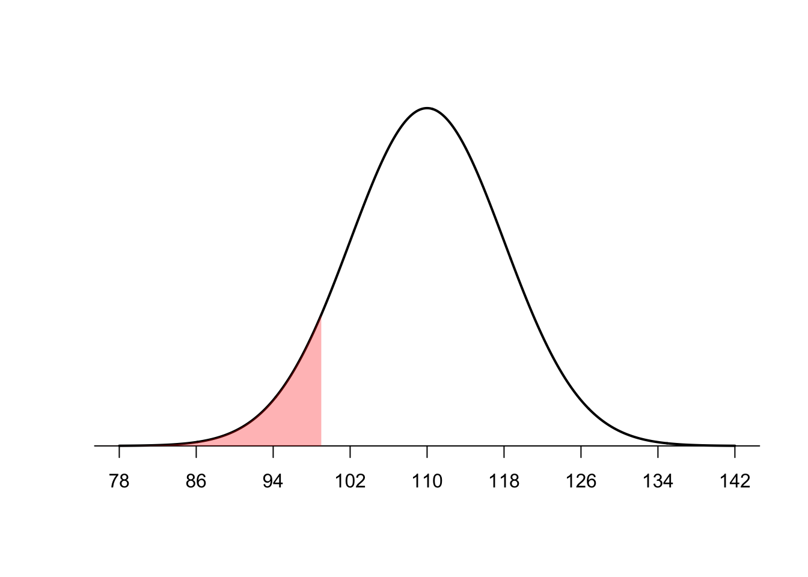
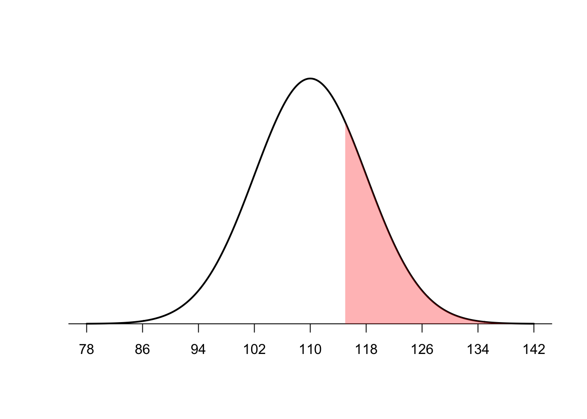
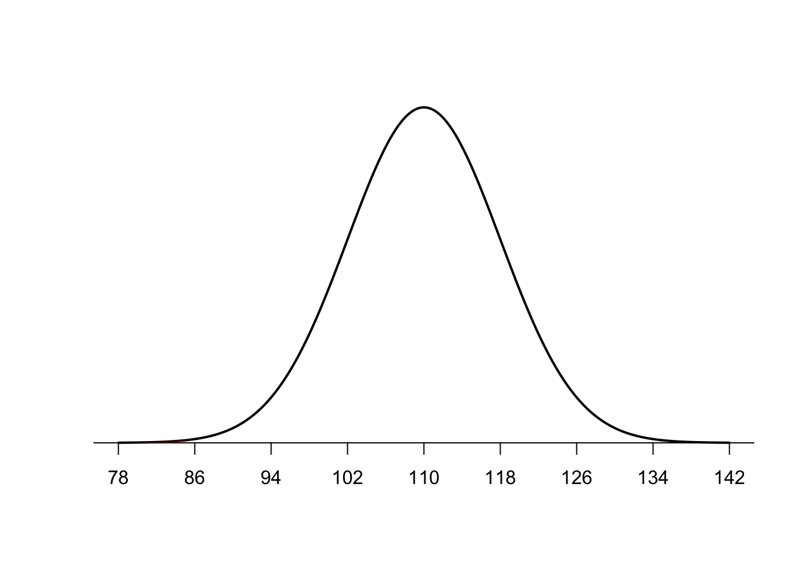
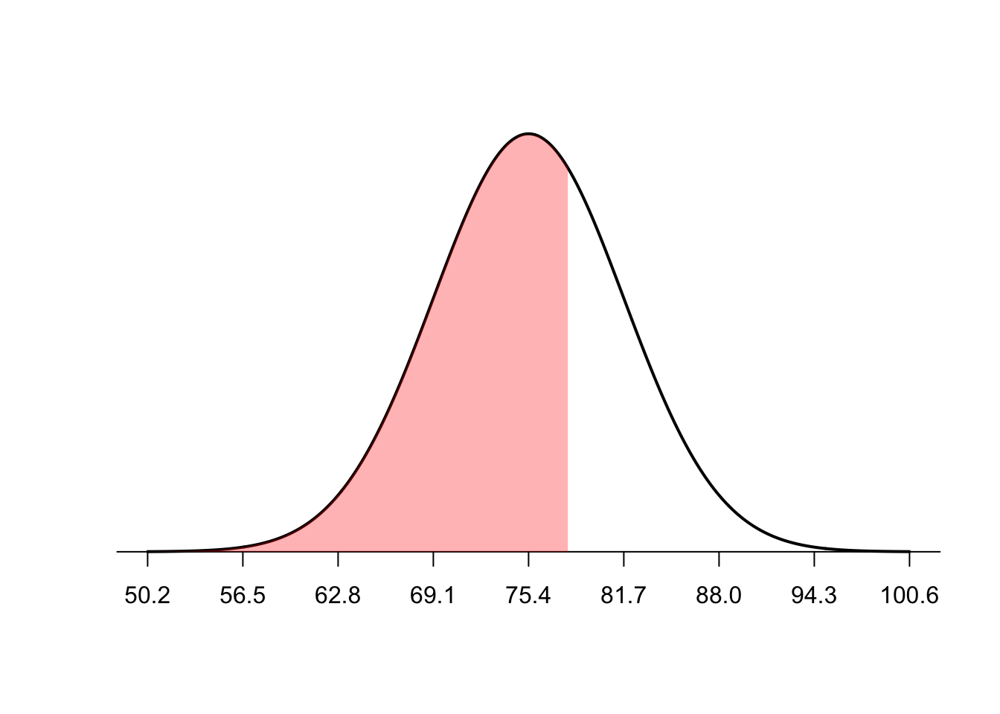
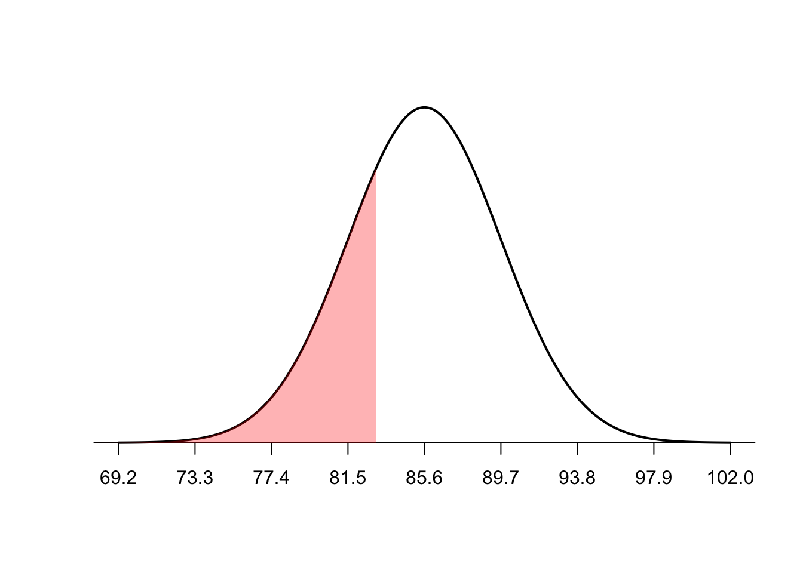
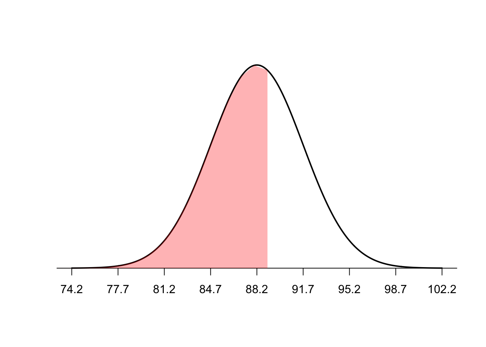
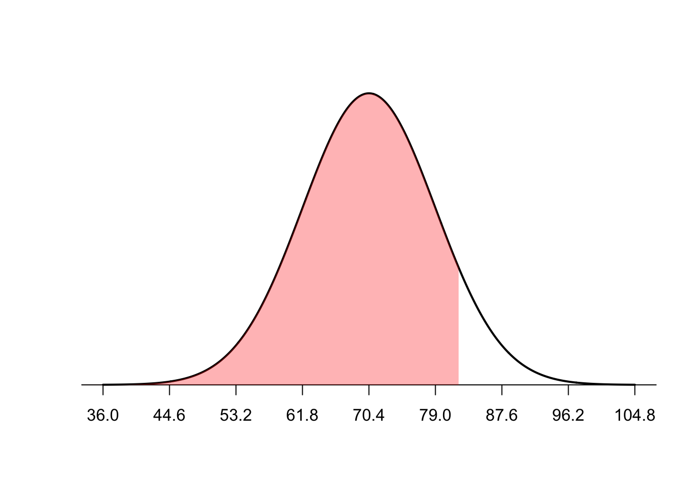
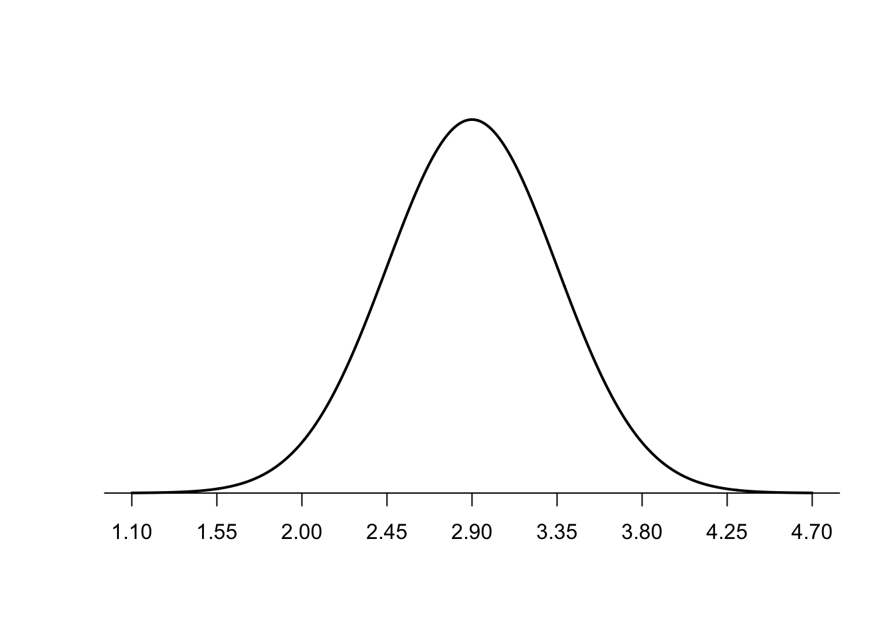
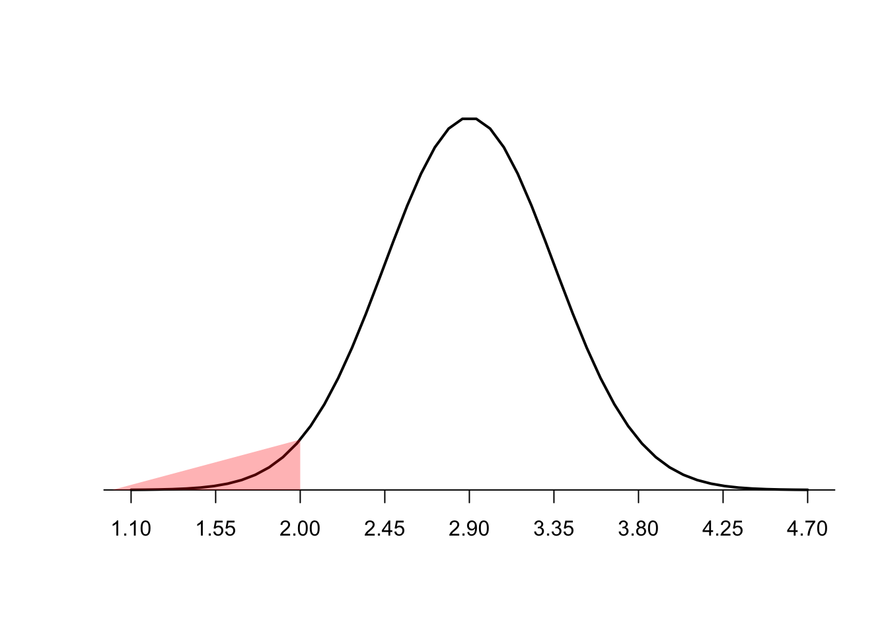

Given that a population of scores has a mean of 110 and a standard deviation of 8.
Graph it

What percentage of scores are below a score of 99?

Calculate the answer
Code
z = (99-110)/8pnorm(z)
[1] 0.08456572
What percentage of scores are above a score of 115?

Calculate it
Code
z = (115-110)/81.00-pnorm(z)
[1] 0.2659855
What percentage is associated with a score of 85?

Calculate it
Code
z = (85-110)/8pnorm(z)
[1] 0.0008890253
Comparing Carol’s Exam Scores
At the end of the quarter Carol took four final exams. The mean and standard deviation for each exam along with Carol’s grad on each exam are listed here. Assume that the grades on the exam are normally distributed.
French class
Class mean = 75.4
Class sd = 6.3
Her score = 78.2
Calculation
Code
z = (78.2-75.4)/6.3pnorm(z)
[1] 0.6716394
Carol performed 67.16% better than the rest of her class in French
Let’s look at the graph

History class
Mean = 85.6
sd = 4.1
Her score = 83.4
Calculation
Code
z = (83.4-85.6)/4.1pnorm(z)
[1] 0.295777
Carol performed better than 30% of her classmates

Psychology class
Class Mean = 88.2
sd = 3.5
Her score = 89.2
Calculate it
Code
z = (89.2-88.2)/3.5pnorm(z)
[1] 0.6124515
Carol performed better than 61.24% of her class

Statistics class
Class mean = 70.4
sd = 8.6
Her score = 82.5
Code
z = (82.5-70.4)/8.6pnorm(z)
[1] 0.9202829
Graph it

Hospital
A hospital in a large city records the weight of every infant born at the hospital. The distribution of weights is normally shaped with a mean of 2.9 kilograms and a standard deviation of 0.45.
Graph

What percentage of infants weighed less than 2.1 kilograms?
Graph it

Graph it
• What is the percentile rank of ao weight of 4.2 kilograms?
• What percentage of infants weighed between 1.8 and 4.0 kilograms?
• Challenge: If 15,000 infants have been born at the hospital how many weighed less than 3.5 kilograms?
Source Code
---title: "Z score homework"author: "Jamesy V"format: html: code-fold: true code-tools: true output-fold: true---Given that a population of scores has a mean of 110 and a standard deviation of 8.Graph it```{r}#| echo: false#Normal Curve examplepopulation_mean <-110population_sd <-8#define upper and lower boundlower_bound <- population_mean - population_sdupper_bound <- population_mean + population_sd#Create a sequence of 1000 x values based on population mean and standard deviationx <-seq(-4, 4, length =1000) * population_sd + population_mean#create a vector of values that shows the height of the probability distribution#for each value in xy <-dnorm(x, population_mean, population_sd)#plot normal distribution with customized x-axis labelsplot(x,y, type ="l", lwd =2, axes =FALSE, xlab ="",ylab ="")sd_axis_bounds =5axis_bounds <-seq(-sd_axis_bounds * population_sd + population_mean, sd_axis_bounds * population_sd + population_mean,by = population_sd)axis(side =1, at = axis_bounds, pos =0)```What percentage of scores are below a score of 99?```{r}#| echo: false#Specify mean and standard deviationpopulation_mean <-110population_sd <-8#define upper and lower boundlower_bound <- population_mean - population_sdupper_bound <- population_mean + population_sd#Create a sequence of 1000 x values based on population mean and standard deviationx <-seq(-4, 4, length =1000) * population_sd + population_mean#create a vector of values that shows the height of the probability distribution#for each value in xy <-dnorm(x, population_mean, population_sd)#plot normal distribution with customized x-axis labelsplot(x,y, type ="l", lwd =2, axes =FALSE, xlab ="",ylab ="")sd_axis_bounds =5axis_bounds <-seq(-sd_axis_bounds * population_sd + population_mean, sd_axis_bounds * population_sd + population_mean,by = population_sd)axis(side =1, at = axis_bounds, pos =0)#Shade areax_adj <-seq(75, 99)y_adj <-dnorm(x_adj, population_mean, population_sd)polygon(c(x_adj, rev(x_adj)), c(y_adj, rep(0, length(y_adj))),col =adjustcolor('red', alpha=0.3), border =NA)```Calculate the answer```{r}z = (99-110)/8pnorm(z)```What percentage of scores are above a score of 115?```{r}#| echo: false#Specify mean and standard deviationpopulation_mean <-110population_sd <-8#define upper and lower boundlower_bound <- population_mean - population_sdupper_bound <- population_mean + population_sd#Create a sequence of 1000 x values based on population mean and standard deviationx <-seq(-4, 4, length =1000) * population_sd + population_mean#create a vector of values that shows the height of the probability distribution#for each value in xy <-dnorm(x, population_mean, population_sd)#plot normal distribution with customized x-axis labelsplot(x,y, type ="l", lwd =2, axes =FALSE, xlab ="",ylab ="")sd_axis_bounds =5axis_bounds <-seq(-sd_axis_bounds * population_sd + population_mean, sd_axis_bounds * population_sd + population_mean,by = population_sd)axis(side =1, at = axis_bounds, pos =0)#Shade areax_adj <-seq(115, 140)y_adj <-dnorm(x_adj, population_mean, population_sd)polygon(c(x_adj, rev(x_adj)), c(y_adj, rep(0, length(y_adj))),col =adjustcolor('red', alpha=0.3), border =NA)```Calculate it```{r}z = (115-110)/81.00-pnorm(z)```What percentage is associated with a score of 85?```{r}#| echo: false#Specify mean and standard deviationpopulation_mean <-110population_sd <-8#define upper and lower boundlower_bound <- population_mean - population_sdupper_bound <- population_mean + population_sd#Create a sequence of 1000 x values based on population mean and standard deviationx <-seq(-4, 4, length =1000) * population_sd + population_mean#create a vector of values that shows the height of the probability distribution#for each value in xy <-dnorm(x, population_mean, population_sd)#plot normal distribution with customized x-axis labelsplot(x,y, type ="l", lwd =2, axes =FALSE, xlab ="",ylab ="")sd_axis_bounds =5axis_bounds <-seq(-sd_axis_bounds * population_sd + population_mean, sd_axis_bounds * population_sd + population_mean,by = population_sd)axis(side =1, at = axis_bounds, pos =0)#Shade areax_adj <-seq(70, 85)y_adj <-dnorm(x_adj, population_mean, population_sd)polygon(c(x_adj, rev(x_adj)), c(y_adj, rep(0, length(y_adj))),col =adjustcolor('red', alpha=0.3), border =NA)```Calculate it```{r}z = (85-110)/8pnorm(z)```## Comparing Carol's Exam ScoresAt the end of the quarter Carol took four final exams. The mean and standard deviation for each exam along with Carol’s grad on each exam are listed here. Assume that the grades on the exam are normally distributed.### French class Class mean = 75.4Class sd = 6.3Her score = 78.2Calculation```{r}z = (78.2-75.4)/6.3pnorm(z)```Carol performed 67.16% better than the rest of her class in FrenchLet's look at the graph```{r}#| echo: false#Specify mean and standard deviationpopulation_mean <-75.4population_sd <-6.3#define upper and lower boundlower_bound <- population_mean - population_sdupper_bound <- population_mean + population_sd#Create a sequence of 1000 x values based on population mean and standard deviationx <-seq(-4, 4, length =1000) * population_sd + population_mean#create a vector of values that shows the height of the probability distribution#for each value in xy <-dnorm(x, population_mean, population_sd)#plot normal distribution with customized x-axis labelsplot(x,y, type ="l", lwd =2, axes =FALSE, xlab ="",ylab ="")sd_axis_bounds =5axis_bounds <-seq(-sd_axis_bounds * population_sd + population_mean, sd_axis_bounds * population_sd + population_mean,by = population_sd)axis(side =1, at = axis_bounds, pos =0)#Shade areax_adj <-seq(50, 78.2)y_adj <-dnorm(x_adj, population_mean, population_sd)polygon(c(x_adj, rev(x_adj)), c(y_adj, rep(0, length(y_adj))),col =adjustcolor('red', alpha=0.3), border =NA)```### History classMean = 85.6sd = 4.1Her score = 83.4Calculation```{r}z = (83.4-85.6)/4.1pnorm(z)```Carol performed better than 30% of her classmates```{r}#| echo: false#Specify mean and standard deviationpopulation_mean <-85.6population_sd <-4.1#define upper and lower boundlower_bound <- population_mean - population_sdupper_bound <- population_mean + population_sd#Create a sequence of 1000 x values based on population mean and standard deviationx <-seq(-4, 4, length =1000) * population_sd + population_mean#create a vector of values that shows the height of the probability distribution#for each value in xy <-dnorm(x, population_mean, population_sd)#plot normal distribution with customized x-axis labelsplot(x,y, type ="l", lwd =2, axes =FALSE, xlab ="",ylab ="")sd_axis_bounds =5axis_bounds <-seq(-sd_axis_bounds * population_sd + population_mean, sd_axis_bounds * population_sd + population_mean,by = population_sd)axis(side =1, at = axis_bounds, pos =0)#Shade areax_adj <-seq(50, 83.4)y_adj <-dnorm(x_adj, population_mean, population_sd)polygon(c(x_adj, rev(x_adj)), c(y_adj, rep(0, length(y_adj))),col =adjustcolor('red', alpha=0.3), border =NA)```### Psychology classClass Mean = 88.2sd = 3.5Her score = 89.2Calculate it```{r}z = (89.2-88.2)/3.5pnorm(z)```Carol performed better than 61.24% of her class```{r}#| echo: false#Specify mean and standard deviationpopulation_mean <-88.2population_sd <-3.5#define upper and lower boundlower_bound <- population_mean - population_sdupper_bound <- population_mean + population_sd#Create a sequence of 1000 x values based on population mean and standard deviationx <-seq(-4, 4, length =1000) * population_sd + population_mean#create a vector of values that shows the height of the probability distribution#for each value in xy <-dnorm(x, population_mean, population_sd)#plot normal distribution with customized x-axis labelsplot(x,y, type ="l", lwd =2, axes =FALSE, xlab ="",ylab ="")sd_axis_bounds =5axis_bounds <-seq(-sd_axis_bounds * population_sd + population_mean, sd_axis_bounds * population_sd + population_mean,by = population_sd)axis(side =1, at = axis_bounds, pos =0)#Shade areax_adj <-seq(50, 89.2)y_adj <-dnorm(x_adj, population_mean, population_sd)polygon(c(x_adj, rev(x_adj)), c(y_adj, rep(0, length(y_adj))),col =adjustcolor('red', alpha=0.3), border =NA)```### Statistics classClass mean = 70.4sd = 8.6Her score = 82.5```{r}z = (82.5-70.4)/8.6pnorm(z)```Graph it```{r}#| echo: false#Specify mean and standard deviationpopulation_mean <-70.4population_sd <-8.6#define upper and lower boundlower_bound <- population_mean - population_sdupper_bound <- population_mean + population_sd#Create a sequence of 1000 x values based on population mean and standard deviationx <-seq(-4, 4, length =1000) * population_sd + population_mean#create a vector of values that shows the height of the probability distribution#for each value in xy <-dnorm(x, population_mean, population_sd)#plot normal distribution with customized x-axis labelsplot(x,y, type ="l", lwd =2, axes =FALSE, xlab ="",ylab ="")sd_axis_bounds =5axis_bounds <-seq(-sd_axis_bounds * population_sd + population_mean, sd_axis_bounds * population_sd + population_mean,by = population_sd)axis(side =1, at = axis_bounds, pos =0)#Shade areax_adj <-seq(30, 82.5)y_adj <-dnorm(x_adj, population_mean, population_sd)polygon(c(x_adj, rev(x_adj)), c(y_adj, rep(0, length(y_adj))),col =adjustcolor('red', alpha=0.3), border =NA)```## HospitalA hospital in a large city records the weight of every infant born at the hospital. The distribution of weights is normally shaped with a mean of 2.9 kilograms and a standard deviation of 0.45.Graph```{r}#| echo: false#Specify mean and standard deviationpopulation_mean <-2.9population_sd <-0.45#define upper and lower boundlower_bound <- population_mean - population_sdupper_bound <- population_mean + population_sd#Create a sequence of 1000 x values based on population mean and standard deviationx <-seq(-4, 4, length =1000) * population_sd + population_mean#create a vector of values that shows the height of the probability distribution#for each value in xy <-dnorm(x, population_mean, population_sd)#plot normal distribution with customized x-axis labelsplot(x,y, type ="l", lwd =2, axes =FALSE, xlab ="",ylab ="")sd_axis_bounds =5axis_bounds <-seq(-sd_axis_bounds * population_sd + population_mean, sd_axis_bounds * population_sd + population_mean,by = population_sd)axis(side =1, at = axis_bounds, pos =0)```### What percentage of infants weighed less than 2.1 kilograms?Graph it```{r}#| echo: false#Specify mean and standard deviationpopulation_mean <-2.9population_sd <-0.45#define upper and lower boundlower_bound <- population_mean - population_sdupper_bound <- population_mean + population_sd#Create a sequence of 1000 x values based on population mean and standard deviationx <-seq(-4, 4, length =50) * population_sd + population_mean#create a vector of values that shows the height of the probability distribution#for each value in xy <-dnorm(x, population_mean, population_sd)#plot normal distribution with customized x-axis labelsplot(x,y, type ="l", lwd =2, axes =FALSE, xlab ="",ylab ="")sd_axis_bounds =5axis_bounds <-seq(-sd_axis_bounds * population_sd + population_mean, sd_axis_bounds * population_sd + population_mean,by = population_sd)axis(side =1, at = axis_bounds, pos =0)#Shade areax_adj <-seq(1, 2.10)y_adj <-dnorm(x_adj, population_mean, population_sd)polygon(c(x_adj, rev(x_adj)), c(y_adj, rep(0, length(y_adj))),col =adjustcolor('red', alpha=0.3), border =NA)```Graph it• What is the percentile rank of ao weight of 4.2 kilograms?• What percentage of infants weighed between 1.8 and 4.0 kilograms?• Challenge: If 15,000 infants have been born at the hospital how many weighed less than 3.5 kilograms?